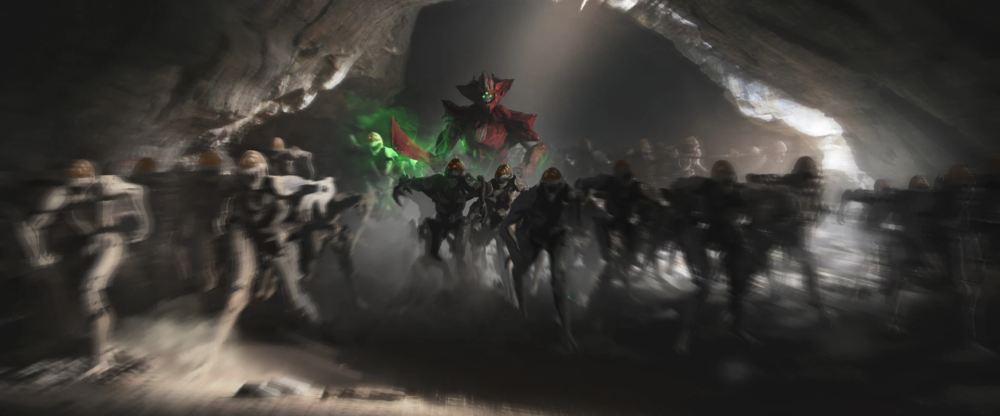
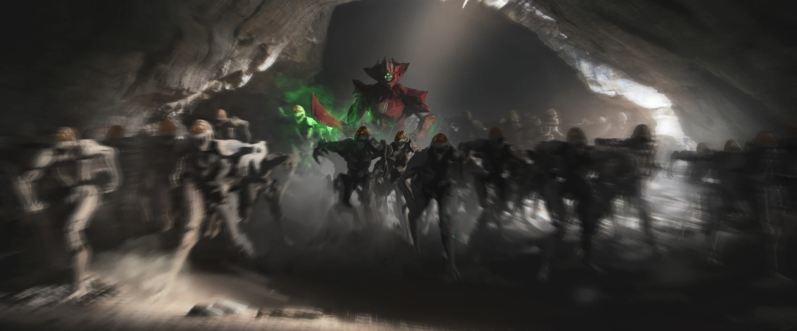

CAMPAGNE COMPLÈTE
Attention!
La section ci-dessous décrit l'intégralité de la campagne de 'Destiny: Les Ténèbres Souterraines'. Êtes-vous sûr de vouloir continuer ?
Après un rapide briefing,
Eris
 Eris Morn est une ancienne Chasseuse et membre des Clandestins qui sert l'Avant-garde en tant qu'experte de
l'histoire de la Ruche. Elle est la seule survivante de la malheureuse escouade dirigée par elle-même et Eriana-3
qui a tenté d'assassiner Cropta sur la Lune, après le Grand Désastre.
vous envoie dans le Cosmodrome pour empêcher la
Ruche

La Ruche serait l'une des races aliens les plus anciennes et auraient été maintenues en vie par d'anciennes magies
oubliées. Ils s'installent au plus profond des planètes, crééent d'immenses réseaux de grottes sans se soucier des dégâts
causés.
Eris Morn est une ancienne Chasseuse et membre des Clandestins qui sert l'Avant-garde en tant qu'experte de
l'histoire de la Ruche. Elle est la seule survivante de la malheureuse escouade dirigée par elle-même et Eriana-3
qui a tenté d'assassiner Cropta sur la Lune, après le Grand Désastre.
vous envoie dans le Cosmodrome pour empêcher la
Ruche

La Ruche serait l'une des races aliens les plus anciennes et auraient été maintenues en vie par d'anciennes magies
oubliées. Ils s'installent au plus profond des planètes, crééent d'immenses réseaux de grottes sans se soucier des dégâts
causés.
Ennemis: la Ruche
,
d'envahir la Terre.
Vous finissez par rencontrer le commandant des armées de Cropta, un de ses Chevaliers les plus puissants:
Sardon, Poing de Cropta. Vous réussissez à éliminer Sardon, mais Eris vous informe que la Ruche ne s'arrêtera
pas tant que la Terre ne sera pas 'prête' au retour de leur maître.
Vous revenez à la Dernière Cité pour faire votre rapport à Eris, et elle vous informe que la Ruche a trouvé le bunker de l'Esprit Tutélaire Raspoutine dans le Cosmodrome. Vous vous dirigez donc vers le bunker de Raspoutine, mais quelque chose ne va pas. Au fur et à mesure que vous vous aventurez dans le bunker, vous vous rendez compte que toutes les portes sont ouvertes.
Soudain, vous entendez une musique, et Eris comprend vite que cette musique signifie que Raspoutine est en danger. Vous vous dirigez vers la salle de contrôle et une fois arrivé, vous rencontrez Omnig'Ul, la Volonté de Cropta. Vous arrivez à faire fuir Omnig'Ul et ses membres de la Ruche, et Raspoutine est en sécurité. Mais Eris à sous-estimé la puissance de la Ruche...
Maintenant que le bunker de Raspoutine a été sécurisé, l'heure est venue de détruire le cristal renfermant l'âme de Cropta.
Vous vous enfocez dans le Gouffre des Enfers, quand vous entendez un puissant rugissement qui retentit dans
toute la forteresse. Eris reconnait ce bruit: le rituel de résurrection a commencé.
Une fois arrivé dans le Temple de Cropta, vous remarquez un cristal géant au centre de la pièce, entouré par quatre
Prêtresses, qui ont pour but de réveiller l'âme de Cropta. Vous réussissez à éliminer les prêtresses et
à détruire le cristal, empêchant Cropta de faire son grand retour. Eris vous remercie pour avoir réussi là ou elle et son
escouade ont échoué.
A partir de maintenant, vous avez le choix entre deux séries de quêtes pouvant être effectuées dans n'importe quel ordre.
Les Disciples de Cropta
L'âme de Cropta est peut-être bannie, mais son armée continue de hanter la Terre. Eris vous envoie donc éliminer les
servants de Cropta dans le Cosmodrome.
Les disciples à éliminer sont les Yeux de Cropta, la
Main de Cropta, ainsi que le Coeur de Cropta. Chacun de ces disciples sont répartis dans
les ruines du Cosmodrome.
Une fois ces disciples éliminés, il vous reste encore un dernier champion de Cropta à traquer...
L'urne du Sacrifice
Pour vous remercier de l'avoir aidée à éliminer l'âme de Cropta, Eris vous propose d'en apprendre plus sur la Ruche et
ses sombres secrets. Pour ce faire, vous devrez charger une urne en éliminant des membres de la Ruche. Ensuite, vous
devrez effectuer un rituel de la Ruche.
Maintenant que le rituel est terminé, l'urne est chargée de magie de la Ruche, et vous devrez remettre cette urne à Eris.
NOUVELLE DESTINATION
La Lune n'est pas une destination inconnue des Gardiens, car ils sont déjà intervenus pour stopper un rituel de la Ruche visant à vider le Voyageur de sa Lumière. Maintenant, la Ruche est de retour sur la Lune et cherche à réveiller son maître.
AUCUNE NOUVELLE DESTINATION N'A ÉTÉ DÉCOUVERTE.
LES NOUVEAUX ENNEMIS
Les rapports des éclaireurs de l'Avant-Garde ne signalent aucun nouveau combattant. En revanche, une forte activité de la Ruche a été détectée dans les profondeurs de la Lune.
AUCUN NOUVEL ENNEMI N'A ÉTÉ DÉCOUVERT.
LES NOUVEAUX GROUPES ENNEMIS
Les rapports des éclaireurs de l'Avant-Garde ne signalent aucun nouveau groupe ennemi, les membres des Héritiers de Cropta et de la Nuée Clandestine semblent être les seules forces présentes sur la Lune.
AUCUN NOUVEAU GROUPE ENNEMI N'A ÉTÉ DÉCOUVERT.
LES NOUVEAUX ASSAUTS
Avec la redécouverte de la Lune, de nouvelles menaces ont été identifiées, et l'Avant-Garde a mis à disposition des Gardiens deux nouveaux Assauts.
L'Esprit Éternel
Le Jardin Noir ne restera pas longtemps parmi nous. Maintenant, les Vex innondent les canaux du
Jardin pour le protéger. Quelque chose a commencé à réanimer le Coeur Noir, autrefois détruit par
les Gardiens.
La mission des Gardiens est de retourner dans le Jardin Noir et d'éliminer l'Esprit Eternel avant
qu'il ne ressucite le Coeur Noir.
La Volonté de Cropta
Omnig'Ul est la dernière des généraux de Cropta, et dirige maintenant sa couvée sur Terre.
Elle est responsable du réveil de son maître. Tant qu'elle vivra... la menace du retour de Cropta hantera toujours ce monde.
Les Gardiens doivent traquer Omnig'Ul dans le Cosmodrome et l'éliminer afin de mettre un terme à la
résurrection du Dieu-Chevalier.
LE NOUVEAU RAID
L'Avant-Gardeappelle tous les Gardiens disponibles à se rendre sur la Lune pour une mission de la plus haute importance. Préparez-vous, vous devrez affronter les membres d'élite de la Ruche.
La Chute de Cropta
L'âme de Cropta a peut-être été bannie de ce monde, et sa couvée presque anéantie, mais la
menace d'un potentiel retour du Dieu-Chevalier demeure.
Pour éliminer cette menace une bonne fois pour toutes, vous devrez vous aventurer dans les fosses les plus profondes du
Gouffre des Enfers.
Une fois dans le Gouffre, infiltrez-vous dans son monde du trône, le Trône de l'Ame Suprême, et éliminez
Cropta pour de bon.
Mais faites attention, Cropta n'est pas seul dans son monde du trône. Ses champions les plus puissants seront
présents pour vous barrer la route.
Stratégies de Raid
Dans Destiny, un Raid est composé de plusieurs étapes. Chaque étape possède une mécanique de jeu bien précise
qui est nécessaire à sa complétion.
Si vous souhaitez découvrir les mécaniques de ce Raid, cliquez ici.